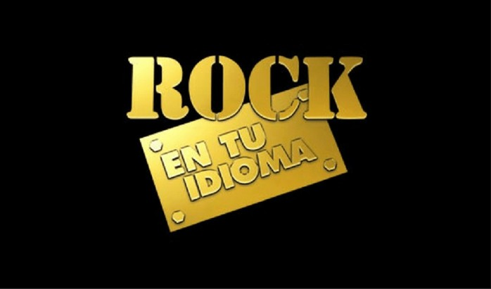
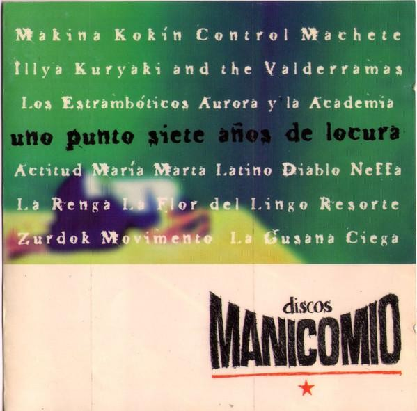
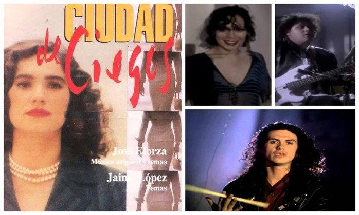
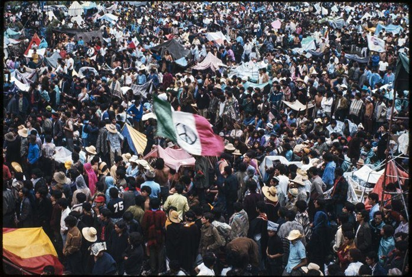

Tal vez el Vive Latino, los conciertos, las tocadas en bares, fiestas y ahora en estos tiempos de confinamiento en casa las sesiones en vivo en las diferentes plataformas, esto te puede parecer normal dentro de la escena musical en nuestro país, pero hace algunas décadas atrás esto no existía. Pocas eran las bandas y mucho menos había un apoyo para promocionar su música pero siempre hubo quien se las ingenio para abrir las puertas para que el Rock Mexicano saliera adelante. A continuación te mencionare algunas bandas que cargaron este gran peso:

LOS INICIADORES
Durante la década de los 50’s y 60’s, en el panorama del rock en México predominaban las versiones de temas estadounidenses, muchas de las cuales resultaron ser más exitosas que las canciones originales pero también empezaron a surgir en México varias bandas consideradas como los iniciadores del Rock en nuestro país, como los Los Teen Tops, Los Rebeldes del Rock, Peace & Love, La Fachada de Piedra, Los Locos del Ritmo, Love Army, La Revolución de Emiliano Zapata, El Ritual, Ciruela, Los Yaki, Tinta Blanca; Los Dug Dug’s, Toncho Pilatos, Bandido, Three Souls In My Mind, Chac Mool, Ritmo Peligroso, Size, Enigma, Fongus, Decibel (por mencionarles algunos). La mayoría tenían letras en ingles que poco a poco fueron cambiando al español. Algunas de estas bandotas formaron parte del legendario festival de Rock y Ruedas en Avandaro el cual se transmitió a través de un teléfono de radio. Cabe mencionar que el único sobreviviente es el TRI.
LOS CONTINUADORES
Para la década de los 80’s surgieron otros músicos y bandas, como Jaime Lopez, Cecilia Toussaint, Kenny y los Eléctricos, Botellita de Jerez, Rostros Ocultos, Newspaper, que prepararían el camino para que después del fatídico temblor de 1985 dentro de los escombros surgieran los Caifanes, Maldita Vecindad y los Hijos del Quinto Patio y poco mas tarde La Lupita, Santa Sabina, Café Tacuba, La Cuca, La Castañeda, Fobia, Los amantes de Lola, Azul Violeta, Tijuana No!, Coda, Radio Kaos, Kerigma, Víctimas del Doctor Cerebro, El Juguete Rabioso, entre otros, que consolidaron la presencia del Rock hecho en México y abrieron miles de espacios para la escena rockera actual.

LAS DISQUERAS
Uno de los primeros sellos en editar Rock hecho en México fue Comrock, fundado por Juan Navarro y Ricardo Ochoa. Ellos hicieron realidad los discos de Kenny y los Eléctricos y Ritmo Peligroso, ademas de formar los inicios del movimiento "Rock en tu Idioma". El éxito que tuvo el Rock Nacional en los 80’s y 90’s se debió a que una disquera transnacional, La BMG, abrió un subsello llamado Culebra, este le dio chance a casi todas las bandas de la época apoyando y respetando sus conceptos musicales, aunque no con los recursos que los músicos hubieran querido. Discos culebra funciono hasta 1997 y su cierre surgió discos Manicomio, que dio espacio a bandas como Control Machete, Azul Violeta y Molotov.
LOS CONCURSOS
En 1987 BMG lanza la primer convocatoria para un concurso de Rock consolidando el movimiento "Rock en tu Idioma". De ahí surgieron Maldita Vecindad y los Hijos del Quinto Patio y Fobia. Mas tarde vendrían otros concursos como el "Metalaria" y la "La Batalla de las Bandas" que se realizaban año con año con una gran participación de bandas del D.F. y del interior de la república.

TEATRO, CINE Y ROCK
Con el auge del Rock también tuvieron gran empuje la danza, el teatro, el performance y las artes en general, pues muchos músicos se involucraron en estas disciplinas o colaboraban con artistas de otros géneros. Tal es el caso de Santa Sabina, que se formo después de que sus integrantes se conocieron al ser parte del elenco de la obra de teatro Vox Thanatos, montada en 1988; y de la incursión en cine de Saul Hernandez, Rita Guerrero, y Sax de la Maldita en la película Ciudad de Ciegos de 1990. Por su parte, Café Tacuba contó con la participación de Ofelia Medina en el vídeo de Maria de 1992.

EL ROCK MEXICANO DESPUÉS DE AVÁNDARO
Como es sabido este 11 de septiembre se celebra el aniversario 50 de lo que fue el "Festival de rock y ruedas de Avándaro", la importancia de este evento para la escena del rock nacional tuvo dos caras, la primera fue que este evento sirvió para mostrar la fuerza y la calidad de los músicos de la época, así como una identidad propia que se estaba construyendo en un momento en el que el genero a nivel mundial estaba surgiendo como todo un suceso, ya no así como una moda, era el momento cúspide que necesitaba el rock de aquellos días.
La otra cara fue la que los medios manipulados por un gobierno que se asustaba con algún movimiento que tuviera que ver con la juventud de la época, recordemos que aun estaba fresco el suceso de 1968 en Tlatelolco y 3 meses antes con La Matanza del Jueves de Corpus, al ver que podía salirseles de las manos pues empezó una prohibición del genero detuvo el crecimiento de este, ya que muchos se quedaron sin sus medios de trabajo y los pocos que resistieron estuvieron en la clandestinidad, casi por una década.
Después de navegar en la clandestinidad e ir saliendo de apoco de las profundidades, llego la década de los 80s, pudiéremos decir que fue la oportunidad del resurgimiento del genero en nuestro país con la apertura de las radios (la pantera y radio capital por nombrar algunas) que aunque le daban mas difusion a las bandas internacionales empezaban de a poco a mirar la escena nacional.

¿HAN CAMBIADO LAS OPORTUNIDADES?
Si han cambiado, podemos decir que cada vez hay mas foros donde poder tocar y mostrar tu trabajo, pero también hay otras que no, como las malas practicas a lo largo del tiempo.
Sabemos de antemano que como todo es un negocio y mas para los promotores y las disqueras, y para la industria de la música nacional el mirar hacia el rock es en un porcentaje bajo si lo comparamos con otros géneros que son mas masivos, a eso le podemos sumar la infinidad de malos tratos de algunos hacia las propuestas que van naciendo.
A veces no importa que el talento sea excelente si el camino esta lleno de mierda, desde tocar en lugares que no son los adecuados hasta ser robados por promotores despiadados que se aprovechan de las ganas que tiene el músico por mostrar su trabajo. Esto desmotiva y hace que mucho talento tenga que desistir.
A eso le podemos sumar que ha existido cierto rechazo del publico que consume rock solo internacional, y que no le dan la oportunidad de conocer los exponentes que hay en nuestro país, ya que le consideran de menor calidad aunado a que se dejan llevar solo por lo que dictan los medios tradicionales o las modas.
En estos últimos años podemos ver que el crecimiento de la escena nacional es grande asi como el talento en todos los géneros: Rock, Metal, Stoner, Sinfonico, Death, Indie, Punk, Rap... optar por ser independiente y apoyarse en los medios electrónicos ayuda mucho. 50 años después, nuestro rock sigue vivo.